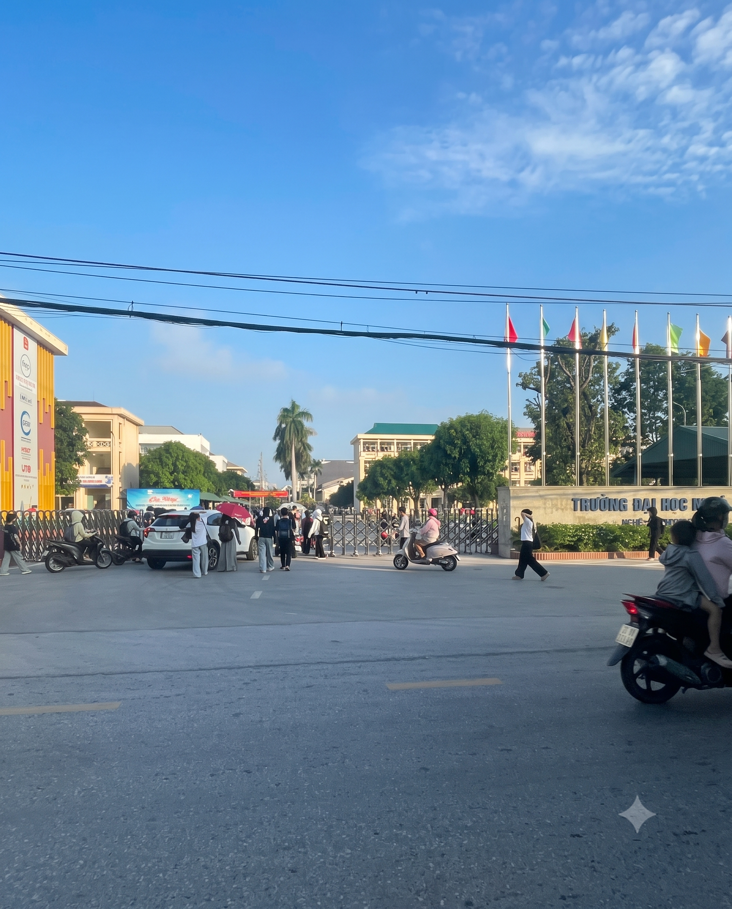
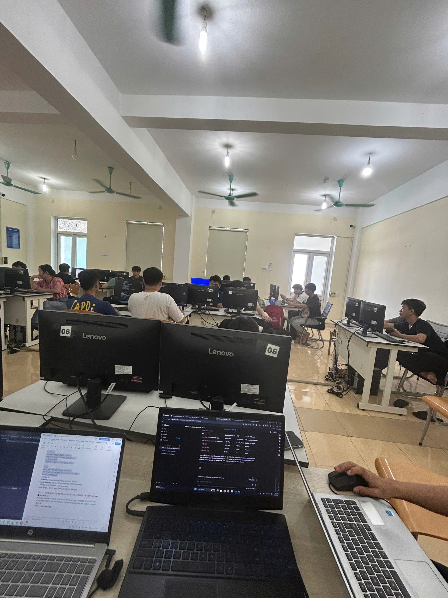
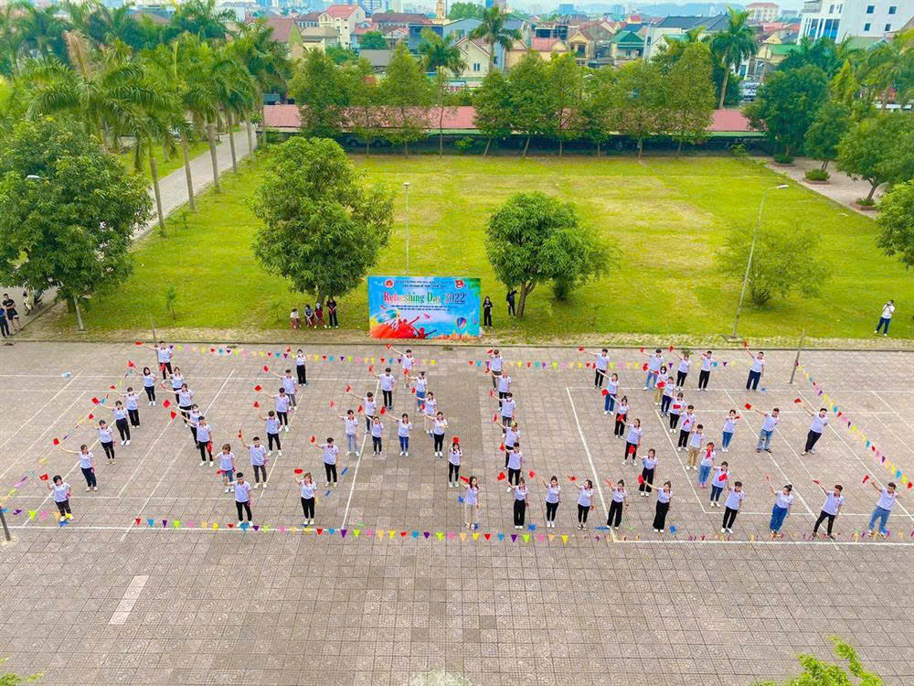
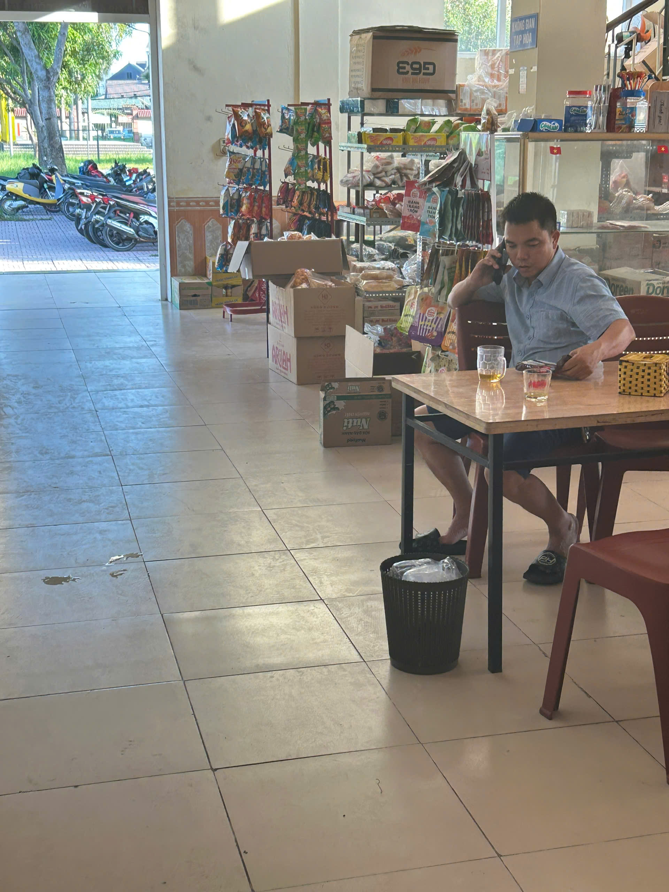
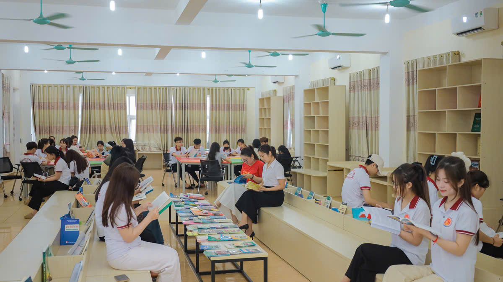
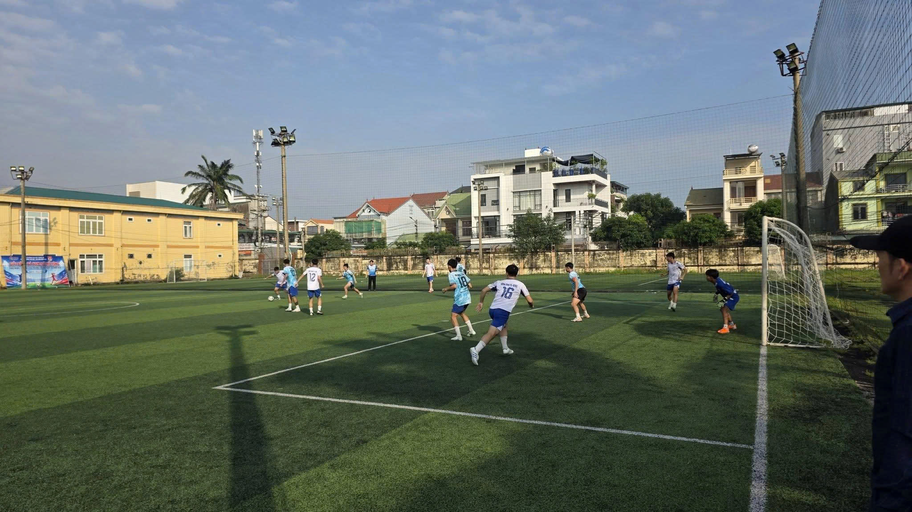
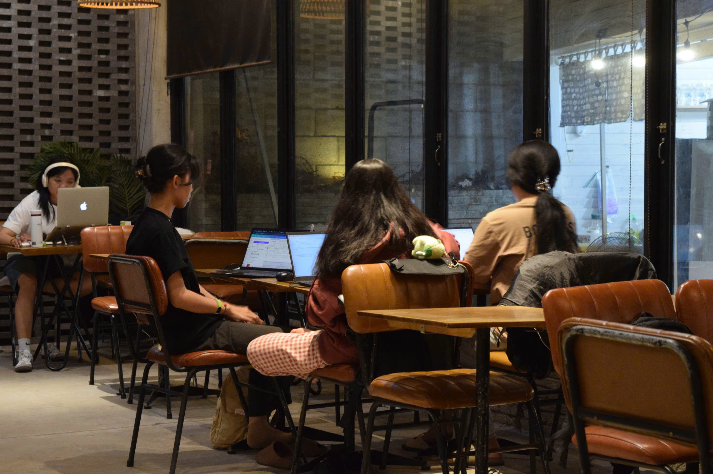
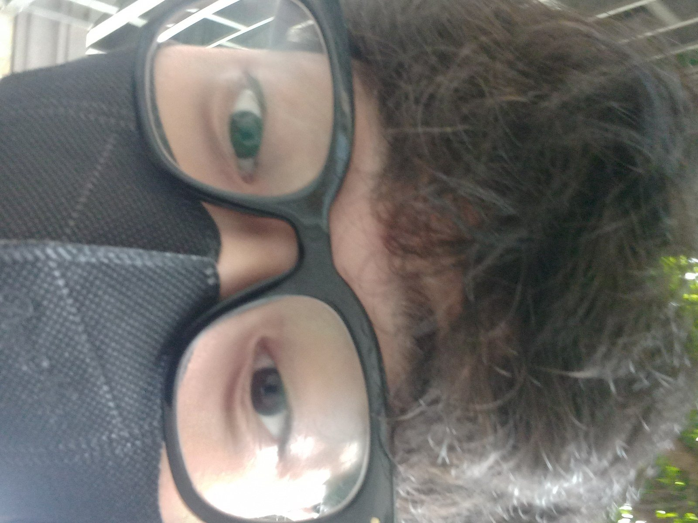

Mốc 01 Cùng đến với trường tôi
Cổng trường
Những chiếc xe máy đầu tiên rẽ vào trường khi trời còn dịu mát. Một ngày học bắt đầu bằng tiếng chào bác bảo vệ và bước chân vội về phía lớp.
Bắt đầu một ngày cùng vớiTrường Đại học Nghệ An.
Trường Đại học Nghệ An · Nghe An University
NAU Timeline ghi lại nhịp sinh hoạt trong khuôn viên Trường Đại học Nghệ An qua tám mốc giờ — từ những chiếc xe máy đầu tiên trước cổng trường đến ánh đèn hành lang lúc khuya.
Mốc 01 Cùng đến với trường tôi
Những chiếc xe máy đầu tiên rẽ vào trường khi trời còn dịu mát. Một ngày học bắt đầu bằng tiếng chào bác bảo vệ và bước chân vội về phía lớp.
Bắt đầu một ngày cùng vớiTrường Đại học Nghệ An.

Mốc 02 Tiết thực hành
Màn hình lần lượt sáng lên, tiếng gõ phím lấp đầy khoảng lặng đầu buổi. Cả lớp cùng làm bài thực hành, thỉnh thoảng ghé sang máy bên cạnh để hỏi nhanh một dòng code.
Đây là nơi chúng tôiTạo ra tương lai.

Mốc 03 Giờ giải lao
Chuông giải lao vừa dứt, những chiếc ghế đá nhanh chóng có người ngồi. Bạn bè tụ lại kể chuyện lớp, chuyền nhau chai nước rồi tranh thủ tận hưởng chút nắng giữa buổi.
Giờ giải lao của chúng tôiSau những tiết học.

Mốc 04 Đến giờ ăn
Hàng người nối nhau trước quầy, ai cũng ngó xem hôm nay có món gì nhanh và vừa túi tiền. Bữa trưa giản dị ngon hơn khi được ngồi cùng nhóm bạn sau một buổi học dài.
Giờ ăn đây rồiĐói lắm rồi phải ăn thôi.

Mốc 05 Buổi chiều
Tiếng lật trang và tiếng bước chân khẽ tạo nên nhịp riêng trong thư viện. Người tìm tài liệu, người ngồi hoàn thiện bài tập, ai cũng quý một góc đủ yên để tập trung.
Nói nhỏ nè Ổ cắm ở tầng 7 là tài nguyên quý — tìm được chỗ trống thấy nhẹ cả người.

Mốc 06 Tan học
Tan tiết cuối, sân bóng và sân cầu lông lại rộn lên. Ở một góc khác, thành viên câu lạc bộ tranh thủ tập văn nghệ và chuẩn bị cho buổi sinh hoạt tiếp theo.
Sau giờ họcCuối cùng đã tìm lại được chính mình rồi nè.

Mốc 07 Sau giờ học
Quán cà phê quanh trường trở thành chỗ học nhóm quen thuộc. Vở mở giữa bàn, mỗi người xử lý một phần bài tập và cùng nhắc nhau về deadline đang đến gần.
Học nhóm nào“Còn phần nào chưa hiểu không?” là câu mở đầu cho một buổi tối dài.

Mốc 08 Khép lại ngày
Đèn hành lang vẫn sáng khi khuôn viên dần lắng xuống. Một ngày học khép lại; ngày mai, những tấm vé thời gian lại bắt đầu từ cổng trường.
Buồn ngủ quá điĐi ngủ thôi nào mai bắt đầu ngày mới.
Cuối ngày Kiểm tra trí nhớ
Điểm cao nhất: 0/3
01 / Ý tưởng
Đời sống sinh viên không chỉ diễn ra trong giờ lên lớp. Mỗi thời điểm có một nhịp riêng: cổng trường buổi sớm, căng tin giờ trưa, thư viện đầu chiều hay buổi học nhóm khi trời tối. Đồ án chọn những khoảnh khắc quen thuộc ấy để kể về một ngày ở Trường Đại học Nghệ An.
Website dẫn người xem qua tám mốc giờ thay vì đặt các hoạt động thành những mục rời nhau. Màu bầu trời thay đổi theo từng cảnh, từ sắc sáng sớm đến nền đêm yên tĩnh. Nhịp màu và thời gian giúp người xem cảm nhận ngày học đang trôi qua.
Mỗi giờ trong ngày là một góc khác của ngôi trường.
02 / Điểm nổi bật
Sắc trời chuyển theo mốc giờ, để mỗi cảnh có không khí riêng từ buổi sớm đến đêm.
Đồng hồ lật số hiển thị giờ của khoảnh khắc đang nằm giữa màn hình.
Vị trí thiên thể dịch chuyển theo tiến độ cuộn, rồi đổi từ mặt trời sang mặt trăng khi trời tối.
Ba câu hỏi ngắn giúp người xem thử nhớ những chi tiết vừa gặp trong hành trình.
03 / Công nghệ
HTML5 CSS3 JAVASCRIPT BOOTSTRAP 5 GITHUB PAGES VS CODE CODEX CLAUDE ANTIGRAVITY
| Công nghệ | Dùng để làm gì |
|---|---|
| HTML5 | Tạo cấu trúc và nội dung cho các trang. |
| CSS3 | Định dạng giao diện, bố cục và chuyển động. |
| JavaScript | Điều khiển các tương tác trên trang. |
| Bootstrap 5 | Dùng lưới responsive và các thành phần giao diện. |
| Claude | Hỗ trợ lên ý tưởng, xây dựng kịch bản chi tiết từng bước làm website. |
| VS Code | Soạn thảo mã nguồn của dự án. |
| Codex | Hỗ trợ đọc, viết và chỉnh sửa mã trong quá trình làm đồ án. |
| Antigravity | Hỗ trợ việc test thử website và nêu ra những vấn đề cần sửa. |
04 / Quy trình
Xác định hướng kể một ngày qua các mốc giờ và không gian trong website.
Tập hợp tư liệu nhóm có thể sử dụng, rồi viết nội dung cho từng phần của trang.
Chọn bảng màu theo logo NAU và sắp xếp nội dung thành các phần dễ theo dõi.
Dựng các trang bằng HTML, CSS và JavaScript, kết hợp các thành phần Bootstrap cần thiết.
Kiểm tra giao diện ở các kích thước màn hình, sau đó xuất bản website tĩnh.
05 / Giới thiệu
Sinh viên Trường Đại học Nghệ An

Khoa Công nghệ Thông tin - Trường Đại học Nghệ An
Giảng viên hướng dẫn: Lê Thị Cẩm Mỹ
Môn học: Thiết kế web
06 / Hỏi đáp